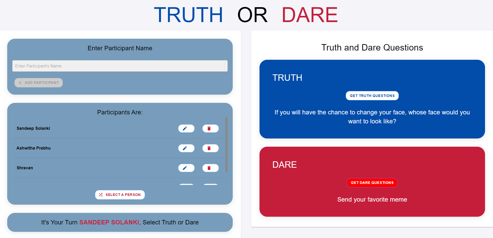

Truth or Dare Website
Website Preview
About the Website
I developed a Truth and Dare game website where a
group of people can play together. Users can add, edit, or delete the
names of the participants who are playing. Once all participants are
added, a random participant can be selected by clicking the "Random
Person" button. The selected person will then choose between "Truth"
or "Dare." After making their choice, they can click the "Generate
Question" button to receive a random question that matches the game’s
theme. The website offers an engaging, interactive platform for group
play with a user-friendly interface.
I developed a fully interactive Truth and Dare game website using Vite, React, Material-UI, and CSS Modules. The website allows users to add, edit, and delete participants, randomly select a person, and generate "Truth" or "Dare" questions. It provides a fun, engaging, and user-friendly experience for group play, with a clean and responsive design that works seamlessly across various devices.Check out the live website here: Live Game Website.
Technologies Used
This Website was developed using a combination of modern web technologies to ensure a seamless, responsive, and well-structured user experience:
- Vite + React.js: The project is built using Vite for fast development, paired with React to enable a component-based structure for the game logic, including participant management and random selection features.
- Material-UI: Utilized for responsive design and pre-built UI components such as buttons, text fields, cards, and grids, creating a polished and consistent user experience across different devices.
- CSS Modules: Used for modular and scoped styling to ensure specific styles for each component without conflicts.
- JavaScript: Handles the logic for adding, editing, deleting participants, randomly selecting a person, and generating "Truth" or "Dare" questions.
- HTML5: Structured the layout, including input forms, buttons, and lists, ensuring proper display and functionality of the game across all platforms.
Links
Check out the source code of the portfolio on GitHub: GitHub Repository
View the live portfolio website: Live Website